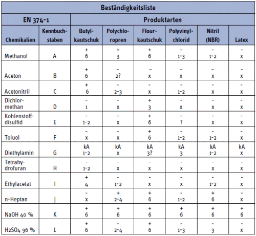

Permeation ist die molekulare Durchdringung durch das Handschuhmaterial. Die Zeit, die die Chemikalie hierfür benötigt, wird in Levels angegeben.
| Level 1 > 10 min | Level 2 > 30 min | Level 3 > 60 min |
| Level 4 > 120 min | Level 5 > 240 min | Level 6 > 480 min |

Eignung der oben genannten Handschuhmaterialien entsprechen den aufgeführten Chemikalien nach Angaben aus GESTIS:
+ = nach GESTIS geeignet
– = nach GESTIS nicht geeignet
kA = keine Angaben in GESTIS
x = nicht geeignet
? = nur unter speziellen Bedingung geeignet